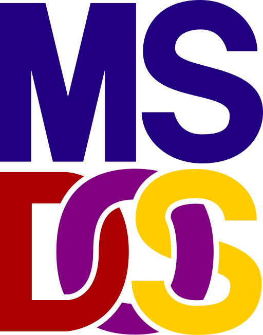

Los sistemas operativos son la base del funcionamiento de cualquier computadora, permitiendo la comunicación entre el hardware y el software.
| Definición | Componentes | Funciones principales |
|---|---|---|
| Un sistema operativo es el conjunto de programas y software básico que gestiona los recursos de un dispositivo (como el procesador, la memoria y el almacenamiento) y permite la ejecución de aplicaciones. |
El sistema operativo posee tres componentes esenciales que permiten la interacción con el hardware:
|
|
Los tipos de sistema operativo varían según el hardware y la función de cada dispositivo. Existen algunos para ordenadores y otros para dispositivos móviles, por lo que cada uno está diseñado para diferentes necesidades.
| Tipo | Ejemplo | Imagen | Características |
|---|---|---|---|
| Monousuario | MS-DOS |  | Permite a un solo usuario ejecutar programas en un momento dado. |
| Multiusuario | Unix | Permite a varios usuarios trabajar al mismo tiempo en el sistema. | |
| Tiempo Real | VxWorks | Responde a eventos en tiempo inmediato, usado en robótica y aeronáutica. | |
| Distribuido | Amoeba | Se ejecuta en varias computadoras conectadas para trabajar como un solo sistema. | |
| Móvil | Android | |
Diseñado para dispositivos móviles como smartphones y tablets. |